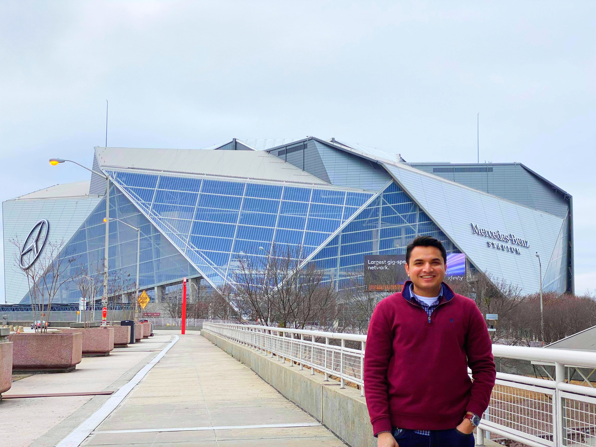

Milan Patel
 Atlanta GA 30360 ·
Atlanta GA 30360 ·
 321-831-8129 ·
321-831-8129 ·

I build, break, and fix cloud infrastructure for a living — where I help enterprise customers architect and troubleshoot containerized workloads on ECS and EKS at scale. My biggest flex? I wrote the EKS Pod Information Collector (EPIC) — an open-source troubleshooting script that's become a go-to tool for 5,000+ AWS customers and internal teams when things go sideways in Kubernetes. Before AWS, I was the person keeping the lights on for 10,000+ restaurant POS systems at Revel Systems — building Terraform modules, wiring up CI/CD pipelines with security gates, and getting paged at 2 AM when production decided to have opinions. I've shipped infrastructure across AWS, Azure, and GCP, automated everything I could get my hands on (Bash, Python, Ansible, Terraform), and built full-stack apps when the situation called for it. I'm AWS Solutions Architect – Professional certified, AI Practitioner certified, and hold knowledge badges in EKS, ECS, Networking, Amazon Q Developer, and Generative AI. I have a Master's in Computer Engineering from Florida Tech, an MBA in Engineering Management from Trine University, and two IEEE-published papers on IoT security and trust architectures. I like solving hard problems, automating the boring stuff, and making cloud infrastructure that doesn't wake people up at night.


Education
Trine University, Phoenix, AZ, USA
Executive Communication, Statistics & Quantitative Methods, New Product Development & Innovation Strategies, Project Management, Total Quality Management, Organizational Leadership for Engineers, Engineering Management Capstone
GPA: 3.90 /4
Florida Institute of Technology, Melbourne, FL, USA
Graduate Coursework: Computer Architecture; Applied Discrete Mathematics; Computer Networks; Artificial Intelligence Data-Structures and Algorithm; Real-Time Embedded Systems; Network Security
GPA: 3.50 /4
Uka Tarsadia University (CGPIT), Surat, GJ, India
Undergraduate Coursework: Database Systems; Digital Systems; Computer Networks; Neural Networks; Image Processing
GPA: 3.20 /4
Experience
Domain Specialist Engineer (DSE)
• Served as primary Domain Specialist Engineer in EKS (Elastic Kubernetes Service) and ECS (Elastic Container Service) and single-threaded owner for large/high-complexity Telco, ISV, and Healthcare customers (>20M ARR), maintaining deep ownership of customer workloads, architecture, and context across ECS, EKS, ECR, Fargate, and AWS Batch while conducting proactive workload reviews to identify risks and optimization opportunities.
• Acted as key Point of Contact (POC) between Unified Operations (UOps) Telco team and Account teams (TAMS/SAs); established recurring cadence calls to align on upcoming changes, capture missed updates, and ensure ongoing synchronization of customer architecture, AWS footprint, and runbook data.
• Developed and maintained Critical Workload Review (CWR) runbooks, architecture documentation, and escalation frameworks for AWS Enterprise Support customers — adopted across all UOps enterprise customers as a single source of truth for proactive, context-aware cloud guidance across 15 structured phases covering workload discovery, observability, resiliency, incident response, and continuous improvement.
• Provided escalation and standby support during critical outage and business-critical migration events, including Sev1/P1 production outages, C-Suite escalations, and Andon Cord events: invoked CPR process, engaged internal service teams on priority, activated PVS Ops on-call within 30 minutes, coordinated customer engagement, and drove timely RCA delivery with proactive stakeholder communication.
• Delivered proactive and reactive support for all assigned Enterprise Support customers, combining deep customer workload context with structured cross-team collaboration to reduce discovery time, improve MTTR, and lower production risk across multiple enterprise subscribers.
• Hold AWS Certified Solutions Architect Professional along with AWS AI Practitioner and Generative AI certifications, applied directly to customer architecture decisions and workload guidance.
Technical Account Manager (TAM)
• Owned end-to-end cloud transformation journeys for a portfolio of 5-10 high-value enterprise accounts, developing tailored Strategic Support Plans (SSPs) and roadmaps aligned to business outcomes, and presenting quantified impact through Strategic Business Reviews (SBRs) to C-suite and executive stakeholders.
• Proactively identified and mitigated critical risks security vulnerabilities, resilience gaps, EOL workloads, and cost inefficiencies before customer impact, while advocating for customer needs internally by driving feature requests (PFRs) and leading cross-functional initiatives across engineering, product, and service teams.
• Led strategic engagements including Architecture Reviews, Countdown go-live events, and operational health assessments for enterprise customers running critical production workloads on EKS, ECS, and Fargate translating complex technical findings into clear business risk language for both engineering teams and executive audiences.
• Partnered with Solutions Architects, Account Managers, Support Engineers, and AWS Service teams to plan customer launches, guide escalations end-to-end, and maintain customer momentum through proactive technical guidance and cross-team collaboration across multiple concurrent workstreams.
• Managed Key Customer Issues (KCIs) and escalations across complex multi-service enterprise environments, accelerating cloud adoption by removing blockers, influencing AWS service roadmaps based on recurring customer patterns, and sustaining trusted advisor relationships that drove measurable business transformation.
Cloud Support Engineer
• Worked with global enterprise AWS customers on complex issues relating to AWS services like AWS Elastic container service (ECS), Fargate, ECR, Elastic Kubernetes Service (EKS), Batch, AppMesh, CodeBuild, CodeCommit, VPC, EBS, Lambda, ALB, Cognito to swiftly diagnose and resolve escalated infrastructure issues to ensure seamless business operations and rapid deployments.
• Led end-to-end resolution of 500+ Sev1/P1 production incidents across enterprise EKS, ECS, Fargate, and ECR workloads, coordinating customer engineering teams, AWS service teams, and internal stakeholders simultaneously to restore business-critical operations under extreme pressure.
• Developed and maintained the open-source EKS Pod Information Collector (EPIC) script, adopted by 5,000+ AWS customers and internal teams, significantly accelerating root cause analysis and troubleshooting for Kubernetes workloads.
• Led technical migrations of on-premises applications to AWS Cloud, providing architecture guidance, post-migration support, and cost optimization strategies to maximize operational efficiency and customer adoption.
• Mentored and onboarded new support engineers, conducting structured technical training and workflow sessions. Written internal Blogpost and troubleshooting articles that elevated team troubleshooting productivity and improved service level onboarding effectiveness.
• Collaborated cross-functionally with Customer's TAM, product teams, Solutions Architect to resolve high-stakes incidents, drive process improvements, and deliver customer-driven enhancements to AWS services.
• Proactively identified and mitigated infrastructure risks EOL versions, security misconfigurations, resilience gaps, and networking vulnerabilities before customer impact across 1,000+ enterprise engagements spanning finance, healthcare, e-commerce, and SaaS.
• Guided several large enterprise customers through complex on-premises to AWS cloud migrations involving critical production container workloads, owning architecture recommendations, risk mitigation, and go-live support end-to-end.
• Developed 300-400 level expertise across the full AWS container ecosystem including Kubernetes networking, cluster lifecycle management, multi-tenant architecture, IRSA, autoscaling, CI/CD integration, and cost optimization resolving 3,000+ cases over four years and building pattern recognition across failure modes at scale.
• Earned formal recognition multiple times from customers and leadership for technical advisory impact; built internal runbooks and mentored junior engineers, scaling individual expertise into organization-wide capability.
Cloud-Operations Engineer
• Daily duties include writing IaC modules using Terraform, create monitoring dashboard using DataDog and NewRelic. Building ShellScripts, PythonScript and Ansible playbook to automate the deployment of applications through GitLab CI/CD on AWS.
• Included Automated Terraform Drift detection during the aws infrastructure deployment to get notified with the change/abnormality immediately on Slack. Followed PCI-Compliance Guidelines to protect Prod Infrastructure.
• Integrated BlackDuck and SonarQube with GitLab CI/CD to check and keep track of the code quality and vulnerabilities during the deployments. Scripted an automated CI/CD flow to Containerized the application using Docker and Deploy it onto ECS and EKS cluster.
• Maintained and monitor GitLab pipeline jobs on-prem runners on EKS cluster and implemented new functionality using Helm charts. Configured Vault and KMS with EKS to store env artifact and credentials securely.
• Configured AWS Infrastructure Alerts using DataDog, CloudTrail and PagerDuty for Real-time Incident tracking.
• Created customized Terraformed IaC Modules for RDS, ECS, EKS and AWS Lambda to deploy resources and included real-time monitoring metrics for all the resources using DataDog provider.
• Well-Experienced in being On-CALL and have handled critical production level real-time incident with AWS infrastructure that handles 10K restaurants Point of sale work-load.
DevOps Engineer
• Built and Managed AWS cloud infrastructure of E-Commerce website and Supply/Chain production Env.
• Configured automated Azure Devops CI/CD flow to Update serverless Lambda Function with new code release, Configured Backend APIs performance monitoring with DataDog, CloudFront for UI deployment, SQS queue/S3 bucket for online order management.
• Created multi-AZ VPC networks and VPC Peering with security groups and Firewall Rules, configured TGW-Gateways on AWS. Configured data communication between internal applications using networking protocols namely TCP/IP, REST API, DNS, and SSH.
• Created EKS cluster and deployed python application and DataDog Log forwarder for Pod Monitoring. Configured CloudWatch and Prometheus for monitoring EC2 instances and imported the log files to Cloud storage buckets in S3.
• Built a Jenkins Pipelines to deploy Nodejs and Python application to AWS.
Full-Stack Developer
• Programmed a dashboard portal using web development technologies like ReactJS, NodeJS, JavaScript and MySQL for drone-user community.
• Created AWS cloud deployment and RDS database architecture env for SkySync project.
• Created Security Groups, IAM user/group and VPC on AWS which behaved as virtual cloud to isolate and control the traffic allowed to reach one or more Production AWS EC2 instances.
• Built CI/CD pipelines on AWS code Pipeline, for applications to automate the Deployment to S3 storage buckets on AWS.
Embedded Engineer
• Optimize several embedded automation tools, such as Scala and programmable logic controller (PLC) to automate actuators; Programed PLC components using embedded C and assembly language.
• Keenly performed testing, troubleshooting and installation of software on automation devices over software defined networking (SDN) platform. Designed Technical Documentation and Used Proteus to design circuit schematics of actuators.
IoT Internship
• Conducted critical research on various network protocol and remote sensors to create smart prototype on different computing platforms, such as Arduino UNO and Raspberry Pi.
• Optimized Java functionality in development of smart streetlight monitoring prototype to reduce energy consumption. Implemented remote monitoring through a local host website built using HTML/CSS, C++, and Android application.
Projects
EKS Kubernetes Cluster Log Aggregator and Troubleshooting Script
Developed EPIC, an open-source tool that significantly accelerates root cause analysis and troubleshooting for Kubernetes workloads.
Technology/Software used: Bash, Docker, Python, Kubernetes, EKS, AWS
Revel Cloud-POS System's AWS Cloud Infrastructure
Engineered and maintained the cloud architecture to handle extensive point of sale workloads securely.
Technology/Software used: GitLab CI/CD, CircleCI, Docker, Python, Kubernetes, Lambda, Ansible, iOS, Terraform, AWS
Established AWS and Azure DevOps Cloud Infrastructure for Ecommerce Web
Designed the foundational multi-cloud architecture and pipelines to support dynamic ecommerce traffic flows.
Technology/Software used: Azure DevOps CI/CD, Docker, Serverless API, Kubernetes, Lambda, Cognito, S3, SES, SQS
CI-CD Automated Shell-Scripted Integration
Integrated Github and Jenkins using webhook to automated the build process. Run a shell script to create and configure Jenkins jobs in EC2 instance.
Technology/Software used: GitHub, Kubernetes, Python, Docker, Jenkins, PowerShell, AWS EC2, Unix Scripting
Heart-Disease Diagnosis Using Deep-Learning Techniques
Developed a Convolutional Neural Network (CNN) in PyCharm using machine learning Python libraries, such as scikit-learn that determined the heart abnormalities from different dataset of heart ECG and audio samples that were classified with 96% accuracy.
Technology/Software used: Sci-kit Learn, NumPy, Pandas, Python, PyCharm
Automated Pac-Man with BFS and DFS algorithm implementation
Automated the safest and shortest path finding process to complete the Pac-Man game. Executed breadth-first search and depth-first search algorithm in PyCharm using Python libraries which decreased the completion time by 43%.
Technology/Software used: PyPI, Python, PyCharm
Technical Acumen
JavaScript, Python, Java, C++, C, HTML, CSS, SWRL, Assembly, MATLAB, Shell Script, Bash
AWS (ECS, EKS, ECR, Fargate, Batch, AppMesh, EC2, S3, RDS, Lambda, VPC, ALB, EBS, Cognito, CloudFront, SQS, SES, CloudWatch, CloudTrail, Transit Gateway, KMS), Azure DevOps, GCP
Kubernetes, Docker, Helm Charts, Terraform, Ansible, Chef, GitLab CI/CD, Jenkins, GitHub, Bitbucket, CircleCI, AWS CodeBuild, CodeCommit, CodePipeline, Maven, Gradle
DataDog, NewRelic, Prometheus, Grafana, PagerDuty, BlackDuck, SonarQube, Vault, PCI-Compliance, DevSecOps pipelines
SQL, MySQL, SQLite, Amazon RDS, MongoDB, MS SQL, ReactJS, NodeJS, REST API, TCP/IP, DNS
Publications
- M.Patel, S.Bhattacharyya & A.Alfageeh "Formal Trust Architecture for Assuring Trusted Interactions in the Internet of Things," in IEEE-UEMCON, 2019, eCF Paper Id: 1570575494.
- M.Patel, S.Bhattacharyya, A.Alfageeh & Samuel Perl "Assurance for CyberSecurity with Assume-Guarantee Reasoning," in IEEE-UEMCON, 2019, eCF Paper Id: 1570575746.
- M.Patel, B.Mathew & V.Tumala "Using Classification Algorithm Classify Heart Abnormality From Heart(ECG) Rhythms," in Artificial Intelligence in Medicine Journal By Elsevier, Ref: AIIM_2019_934.
- Thesis: Milankumar Patel "Formal Trust Architecture for Assuring Trusted Interactions in the Internet of Things," Submitted Florida Institute of Technology, 2019.
Awards & Certifications
- AWS Certified Solutions Architect – Professional | Validation No: EVRV0H6131B418GW | http://aws.amazon.com/verification
- AWS Certified AI Practitioner
- AWS Generative AI Foundational
- AWS Generative AI Technical Intermediate
- AWS Certified Solutions Architect Associate
- Cisco Certified Network Associate (CCNA) – Switching and Routing | ID No: 432946442826AQDL, July 2018
- Scholarship offered by Florida Institute of Technology worth of $8000
- Google Developer Challenge Scholarship, Google, Dec 2017
Interests
Apart from being a Software Developer, I enjoy working out and playing basketball and cricket. I am an avid wanderlust. During the warmer and cold months here in Florida, I enjoy surfing, beach reading, and kayaking.
When I am home, I spend most of my spare time reading about different things like Self-development, Investment strategies in Stocks, Food cuisines, Poetry and Sports. Also, I am an aspiring chef who can cook six different cuisines. Frequently, I keep myself updated about latest technology advancements and software release by reviewing Toms'Guide, Electronics4U, NYTimes.